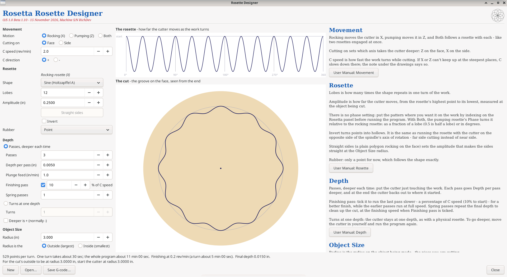
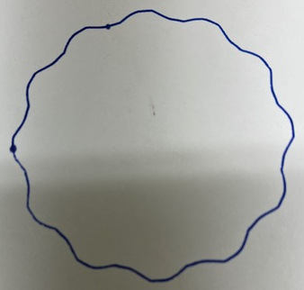
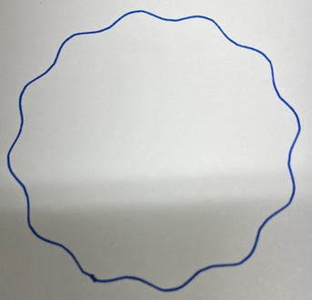

On a rose engine, a rosette is a cam: as the work turns, a rubber follows the rosette's edge or face, and the machine rocks or pumps to follow it (see the Ornamental Turning Book of Knowledge's Rosettes page). The Rosette Designer makes a software rosette instead: you choose its shape, and it saves a G-code program in which C turns the work while the cutter follows the rosette:
- Rocking - the cutter follows the rosette in X.
- Pumping - the cutter follows the rosette in Z.
- Both - X follows one rosette and Z another, as with two rosettes engaged at once.
Use it to try a rosette before buying or making one, or to use a rosette you would need too rarely to be worth making.
|  |
Opening the Rosette Designer
- Click on Applications at the top left corner of the screen.
- Click on the arrow to the right of Rosetta.
- Click on Rosette Designer.
The Rosette Designer only writes G-code files, so it can be open while Rosetta is running.
Only one Rosette Designer window can be open. If one is already open, for example behind Rosetta, opening it again brings that window to the front, with a message saying it was already open.
Designing a Rosette
The Rosette Designer fills the screen, like Rosetta Settings. The drawings in the middle change as you change the settings on the left, and the notes on the right explain each section, with a button that opens this page at that section. The drawings:
- The rosette shows how far the cutter moves as the work turns once.
- The cut shows what the cut will look like on the work.
Rosette
With Motion set to Both (see Movement, below), there are two columns of these settings: the Rocking rosette (X) and the Pumping rosette (Z), each with its own shape, lobes, amplitude and invert, and the pumping rosette also has a phase. The drawing shows both rosettes - X in blue, Z in red.
With an Ellipse there is one more column - see The Ellipse, below.
| Shape |
The shape of the rosette. The Holtzapffel letters are the patterns in Holtzapffel & Co.'s guide to their rose cutting frame:
For more on each letter, and what its number counts, see Holtzapffel Rosette Letters in the Ornamental Turning Book of Knowledge. The other shapes:
Lotus, Tudor and F-1 cut the pattern that the MDF Rose Engine's rosette of that name draws on a paper chuck (see the MDF Rose Engine rosettes). |
| Lobes |
How many lobes around the work, counted the way the Holtzapffel guide numbers its rosettes - the small waves around the edge. For example, J24 has 24 waves, on 4 arcs of 6. Shapes made of groups (J, M, N, O, P and Q) only take whole groups, so Lobes steps by a group. |
| Amplitude |
How far the cutter moves, from the rosette's highest point to its lowest - the amount the cut moves at the work, not at the rosette. |
| Phase |
There is no phase setting for a single rosette. To put the pattern where you want it on the work, index the work on the Rosetta panel before running the program - this does what the phasing holes on a physical rosette do. With Motion set to Both, the pumping rosette has a Phase: it turns the pumping rosette relative to the rocking rosette, either as % of a lobe (50 is half a lobe) or in degrees of the spindle. For example, half a lobe of a 7-lobed rosette is 50% of a lobe, or 25.71 degrees. Indexing can't do this, since it turns both rosettes together. For shapes made of groups (J, M, N, O, P, Q and S), the phase can go past 100%, moving through the group - up to 600% for J's groups of 6. The rosette on an Ellipse also has a Phase - see The Ellipse, below. |
| Invert |
Turns points into hollows. This is the same as running the rosette with the cutter on the opposite side of the spindle's axis of rotation - far side cutting instead of near side. |
| Straight sides |
For a plain polygon rocking on the face, sets the amplitude that makes its sides straight at the Radius (see Object Size, below). |
| Rubber |
The rubber that follows the rosette. For now, the only choice is a Point, which follows the shape exactly. |
The Ellipse
Choose Ellipse as the Shape of the rocking rosette. An Ellipse only rocks (X): with Motion set to Pumping, it doesn't move the cutter.
Under Ellipse Parameters:
- A - half the ellipse's length: from its centre to the end of its length.
- B - half its width: from its centre to its side.
For example, an ellipse 4" long and 2" wide has A = 2 and B = 1. The note under the drawings gives its length, width and the distance between its foci.
The rosette on the ellipse. With an Ellipse, a second column appears beside it: the Rocking rosette on the ellipse (X). Its waves are cut in from the ellipse, so the ellipse is the outside of the pattern.
- Shape - any shape, or None for the plain ellipse.
- Lobes - spaced evenly along the ellipse's outline, so on a long ellipse they don't crowd together along its sides.
- Amplitude - how far the waves cut in from the ellipse.
- Phase - slides the pattern along the outline, as % of a lobe or in degrees (360 is the whole outline). For example, at 0% a D rosette has a cusp at each end of the ellipse; at 50% it has a petal there.
- Invert - turns points into hollows, as above.
With Motion set to Both, the Pumping rosette (Z) is a third column. Its lobes are spaced along the outline too, so the two stay in step.
| D12 on A = 1, B = 0.5, Phase 0% | The same, Phase 50% |
Where to start the cutter. The note under the drawings says where to put the cutter: radius A from the centre, or less when the pattern starts on a wave's deepest point - for example, a D rosette at Phase 0% starts on a cusp, so the cutter starts in by the whole amplitude. Put the cutter on the line you want the ellipse's length to lie along, and use the check circle to set the radius.
Do not expect an exact A by B ellipse unless the cutter starts at the radius the note gives. The program moves the cutter from wherever it is put, by the same amounts at any radius - as a physical ellipse rosette does - so the length always comes out 2 x (A - B) more than the width. Started further out, the cut is rounder; further in, it is longer and narrower, and then a peanut and a figure 8.
Note: with A = 1 and B = 0.5, the length is always 1" more than the width: started at the right radius the cut is 2" x 1"; started further out, perhaps 2 3/8" x 1 3/8".
Movement
| Motion |
Rocking (X), Pumping (Z), or Both - a rocking rosette and a pumping rosette at the same time. |
| Cutting on |
Face (the end of the work) or Side. This sets which axis goes deeper into the work - Z on the face, X on the side - and how the cut is drawn. |
| C speed |
How fast C turns the work while cutting, in revolutions per minute. |
| C direction |
Which way C turns: + or -. |
Depth
Choose one:
| Passes, deeper each time |
The program cuts the rosette several times, going Depth per pass deeper before each pass, at the Plunge feed. The first pass is already one step deep, so put the cutter just touching the work. At the end, the cutter backs out to where it started. Finishing pass: tick it to run the last pass slower, for a better finish - at a percentage of C speed (10% to start). The earlier passes run at full C speed. Spring passes: 0 to 5 extra turns at the final depth, to clean up the cut. They run at the finishing speed when Finishing pass is ticked. |
| Turns at one depth |
The program cuts the rosette the chosen number of times without going deeper - as with a physical rosette. To go deeper, move the cutter in yourself and run the program again. |
Deeper is +: normally the cutter goes deeper by moving the depth axis in its minus direction. Tick this if going deeper means moving it in its plus direction.
Advance and Retract Cutter
To start the cutter clear of the work, set how far it moves in before cutting - X advance, Z advance or both - and which way: Towards centre or Away for X, Towards headstock or Away for Z. Leave both at 0 for no advance.
- Put the cutter that far clear of where the pattern is to be cut.
- Run the program. The cutter moves in at the Plunge feed - the depth axis last (Z on the face, X on the side), so it enters the work along the depth direction.
- The passes are cut from there - their depth is measured from where the advance ends.
- At the end, the cutter moves back out to exactly where you put it, the depth axis first.
Do not run the program until you have checked each advance's direction. The cutter moves the whole advance distance that way before it starts cutting - set the wrong way, it moves into the work instead of up to it.
Note: If the program is stopped part way, the cutter is left where it stopped - it moves back out only at the normal end.
Object Size
Radius is the radius of the object being made - the piece you are cutting - and Radius is the says which part of the cut it is:
- Outside (largest) - where the cut comes furthest out from the centre.
- Inside (smallest) - where the cut comes closest in.
If you are making a rosette to use later on a rose engine, the object being made is that rosette: enter the radius of the rosette you want to make. Rose engines differ - some measure their rosettes across the points (use Outside), others across the hollows (use Inside).
A physical rosette usually has phasing holes, which let it be turned relative to the work on the rose engine. The G-code program doesn't cut them - add them as you would for any rosette, or use Save for 3D Printing, which puts them in. (Patterns cut with Rosetta itself don't need them: index on the Rosetta panel instead.)
Radius is only used for the drawing, for Straight sides and for the note on where to start the cutter - the program cuts wherever the cutter is. When cutting on the face with a rocking rosette, the note under the drawings says where to put the cutter so that the outside or inside of the cut is at that radius.
Note: with an Ellipse cut on the face, A and B set the size, so Object Size is greyed out.
Note: The same rosette cuts a different shape at a different radius - sharper and more hollow closer to the centre, rounder further out. This is the de la Condamine effect (see The de la Condamine Effect in the Ornamental Turning Book of Knowledge). So choose the Amplitude for the Radius you will cut at, and check the drawing - it shows the shape at that radius.
Notes Under the Drawings
Under the drawings, the Rosette Designer says how long one turn and the whole program will take (counting a slower finishing pass), where to start the cutter, and warns you when:
- C, or the axis the rosette or the depth needs, isn't assigned to a channel in Axis Selection - the program won't run until it is.
- C's speed is above its Max Speed, or the rosette is too steep for X or Z to follow at that speed. The program still runs, but C slows down where needed, so it takes longer.
Set the Backlash First
A rosette program reverses the rocking or pumping axis twice for every lobe - a 12-lobe rosette reverses it 24 times each turn. Each time it reverses, any slack in the slide (play in the leadscrew, nut or gears) is taken up before the cutter moves again, so every lobe is cut slightly flat on one side and the curves come out uneven.
Rosetta can make up for that slack. Before cutting a rosette, set the Backlash for the axis that follows it - X for rocking, Z for pumping, both for Both:
- Measure the axis's lost motion: with a dial indicator on the slide, jog one way, then reverse and note how far you jog before the indicator moves.
- Open Rosetta Settings (Rosetta must be closed) and go to the Axis and Stepper Motor Tuning page.
- Enter the measurement in that axis's Backlash box. It is saved at once and used the next time Rosetta starts.
These two Holtzapffel A-12 drawings were cut on a paper chuck by the same program - the first with X's Backlash at 0, the second with it set. The waves of the second are even and smooth:
|  |  |
| No Backlash | Backlash set |
Note: Backlash matters most for small, fine patterns, where the slack is a large part of each wave. It doesn't need to be exact - a little less than the measured lost motion is better than too much, which makes the slide jump at each reversal.
For more on backlash, and what compensation can't fix, see Backlash in the Ornamental Turning Book of Knowledge.
Setting the Start Radius: Check Circle
For a rocking rosette on the face, the program moves the cutter from wherever it is put, so the cutter's distance from C's axis - the start radius the note under the drawings gives - sets the pattern's size and shape. That distance is hard to measure, especially when the headstock moves. The Check Circle... button makes it easy: it saves a small program that turns C once with X and Z standing still, so the cutter draws a circle round C's axis. The circle's diameter is twice the cutter's radius.
- Press Check Circle.... It saves a program named for the size the circle should be, for example Check-Circle_3.000in.ngc, in the gcode folder, and offers to open it in Rosetta.
- Put the cutter just touching the work, where the cut will start.
- Run the check circle program, and measure the circle's diameter.
- If the circle is smaller than it should be, move X out by half the difference; if it is bigger, move X in. For example, if a circle that should be 3" across comes out 2 1/8", move X out by 7/16".
- Run the check circle again, until it is the right size.
- Open the rosette program and run it, without moving X.
Note: with an X advance, set the circle first, then move X by the advance, as the check circle's message says, before running the rosette.
Note: the check circle cuts a light circle in the work. On a paper chuck that doesn't matter; on finished work, set the radius on a scrap piece first.
Note: the check circle works on any machine - see Working from Where the Cutter Starts in the Ornamental Turning Book of Knowledge.
Saving and Running the Program
- Press Save G-code.... The Rosette Designer suggests a name, such as Rosette-Lotus8_rock_face.ngc or Rosette-HoltzD12-Ellipse50_rock_face.ngc, in the gcode folder.
- If Rosetta is running, the Rosette Designer offers to open the program in Rosetta. Otherwise, open it in Rosetta with File > Open.
- Put the cutter where the pattern should be cut - at the radius the note under the drawings gives (use the check circle). Do not start the program until the cutter is where you want the pattern. The program works from wherever the cutter is when it starts - the same as setting up a cut with a physical rosette.
- Run the program.
Note: while the program runs, the progress bar on the Rosetta panel shows which pass it is on, for example Program 42% - pass 2 of 3, then finishing pass 3 of 3.
Do not name the program starting with "Rosetta", and do not name it M100 through M199. Those names are reserved (see Running Gcode Programs), and the Rosette Designer refuses them.
Note: C is not turned back at the end: after three turns, C reads 1080 degrees. The work is in the same place, and the next program again works from wherever C is.
Saving the Rosette for 3D Printing
Save for 3D Printing... saves the rosette itself - not a program that cuts its pattern - so you can 3D print it, or have it made, and use it on a rose engine. It saves two kinds of file:
- STL - for a 3D printer. Open it in your printer's slicer.
- STEP - for CAD programs, and for a machine shop that makes rosettes from metal or wood.
Both files are in millimetres, whatever units the design uses - slicers expect STL files in millimetres.
The kind of rosette depends on the design's Motion:
- Rocking - a disc whose edge follows the pattern.
- Pumping - a disc with a raised rim whose top rises and falls with the pattern. The rim stands at least 1 mm above the rest of the disc.
- Both - each rosette is saved on its own; choose Rocking (X) or Pumping (Z) at the top of the window.
The Settings
- Machine - fills in your rose engine's usual rosette. MDF Rose Engine fills in everything - its size, thickness, bore, phasing holes and mounting slots, as on its rosette drawing. The Armbruster Mark II and the Lindow fill in only their size. Choose Other to enter your own; changing anything the machine filled in changes it to Other.
- Diameter and Measured at - the rosette's size, across the points (Largest) or across the hollows (Smallest). Rose engines differ: measure one of your own rosettes the way your machine's maker does. A pumping rosette's diameter is always its outside.
- Machine ratio - the rosette's wave is the design's Amplitude times this. On most rose engines the rosette moves more or less than the cutter does, set by the machine's levers. To find yours, cut with a rosette whose wave you know and measure the cut. 1 makes the rosette's wave the same as the cut's.
- Thickness - how thick the disc is.
- Centre bore - the diameter of the hole in the middle, to fit your rose engine's rosette arbor.
- Rim width (pumping only) - how wide the patterned rim is, in from the edge.
- Phasing holes:
- Spacing - A quarter lobe apart (the MDF Rose Engine's way): each hole turns the pattern a quarter lobe on from the last - 0, 1/4, 1/2, 3/4, 1 lobe, and on. So the spacing depends on the rosette's lobes: 11.25 degrees on an 8-lobe rosette, 10 on a 9-lobe one, 22.5 on a 4-lobe one. Each hole is a whole number of lobes plus a quarter, a half or three quarters from where the pattern starts (marked Start on the drawing), so the hole at the start phases it by 0. On a rosette with many lobes, holes a quarter lobe apart would touch, so they go 1 1/4 lobes apart instead (or 2 1/4...) - each still turns the pattern a quarter lobe on, and the window says so. Evenly round spaces them equally instead.
- Number - how many; 0 means none. Nine a quarter lobe apart phase the pattern from 0 to 2 lobes.
- On circle - the diameter of the circle their centres are on.
- Hole diameter - each hole's true size (the MDF Rose Engine uses a #30 drill, 0.1285").
- Centred at - where round the rosette the holes are grouped, in degrees: 0 is where the pattern starts (to the right on the drawing), 90 the top. The MDF Rose Engine's are at 0, midway between its two slots.
- Mounting slots - arced slots for the screws that hold the rosette to its drive gear: how many (evenly round from the top; 0 means none), the diameter of the circle along their middles, their Span in degrees (from the centre of one rounded end to the other), and their width (0.266" lets a 1/4-20 screw through). The MDF Rose Engine has two, top and bottom, spanning 90 degrees on a 5" circle.
- Printed hole allowance - printed holes come out smaller than drawn. This much is added to the bore, the phasing holes and the slots' width in the STL file, so they print the right size. Start with 0.008" (0.2 mm), print one, and adjust it to suit your printer. The STEP file keeps their true sizes, for machining.
- Save as - tick STL, STEP or both.
The drawing shows the rosette seen from the top, as it will be printed. On a pumping rosette, darker parts of the rim are higher.
Under the settings, the window gives the rosette's size and how deep its wave is, and how much larger the STL's holes are. It shows problems in red, and Save... stays greyed out until they are fixed - for example, phasing holes that run into the bore or the edge, or that overlap. Warnings in orange don't stop you saving.
Saving
- Set the design as usual, then press Save for 3D Printing....
- Set the rosette's size, mounting and phasing holes, and check the drawing.
- Press Save.... The Rosette Designer suggests a name, such as Rosette-HoltzD12_rock, in the Rosettes folder in Documents. It adds .stl and .step.
- Copy the files to the computer you print or design with. Back Up to USB also copies the Rosettes folder.
The settings are kept with the design, so the window opens with them next time, and they are saved in the G-code program too.
Things to Know
- The edge is shaped for a point rubber. A real rubber's rounded nose can't reach right into narrow hollows, so the printed rosette cuts a little softer than the drawing.
- Which way round. Seen from the top as printed, the rosette matches the drawing in the Rosette Designer. For a shape that isn't the same both ways round - the F-1 heart, or S - try it on a paper chuck first to see which face goes towards you.
- Fine waves. Printers hold about 0.1 mm (0.004"), so a wave much smaller than that may not print. The window warns you.
- Wear. Plastic wears against the rubber. A printed rosette suits trying a design before making it in metal or wood.
Do not print a pumping rosette at a coarse layer height. A pumping rosette is printed lying flat, so its patterned rim is built up in layers that leave ridges as it rises and falls. Print it at the smallest layer height your printer can, and use a rubber that rides over what ridges remain - for example, one with a roller bearing on its nose.
Changing a Saved Rosette
Press Open... and choose a program the Rosette Designer saved. Its settings come back, ready to change and save again.
The Rosette Designer also remembers every setting of the last rosette you worked on, so it opens the way you left it. Press New to start again from the standard rosette.
Note: only programs saved by the Rosette Designer can be opened this way.